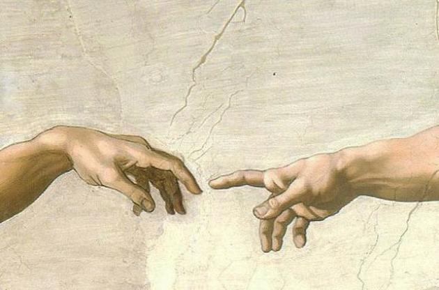
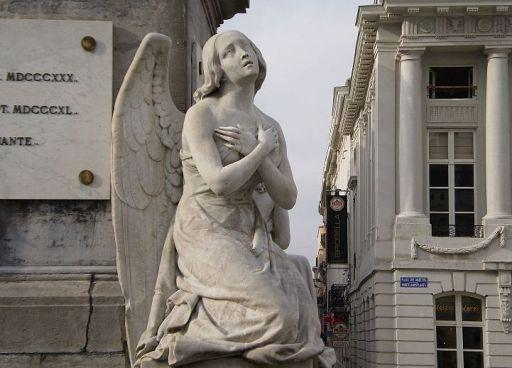

Ренесанс
Відродження, або Ренеса́нс (фр. Renaissance — «Відродження») — культурно-філософський рух кінця Середньовіччя — початку Нового часу, що ґрунтувався на ідеалах гуманізму та орієнтувався на спадщину античності.
Скульптура
Скульптура (лат. sculptura, від sculpo — «вирізаю», «висікаю») — лі́плення, пластика, вид образотворчого мистецтва, твори якого мають об'ємну, тривимірну форму і виконуються із твердих чи пластичних матеріалів. Скульптура зображує головним чином людину, рідше тварин, її головні жанри — портрет, історичні, побутові, символічні, алегоричні зображення, анімалістичний жанр. Художньо-виразні засоби скульптури — побудова об'ємної форми, пластичне моделювання (ліпка), розробка силуету, фактури, у деяких випадках також кольору.
